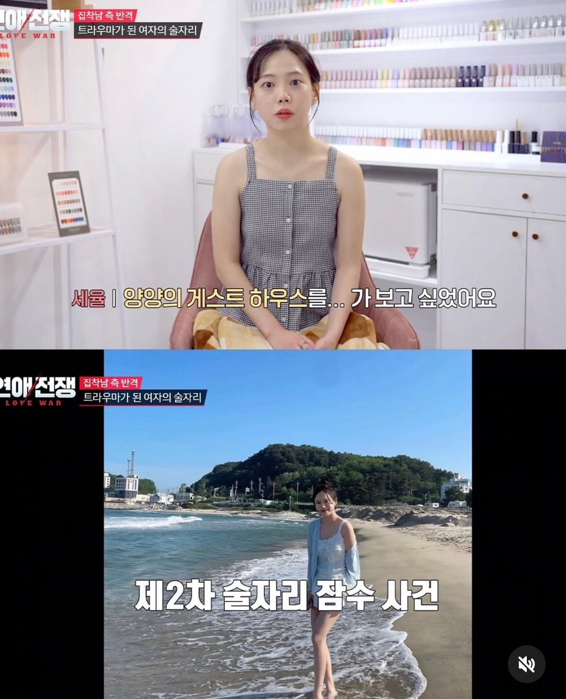
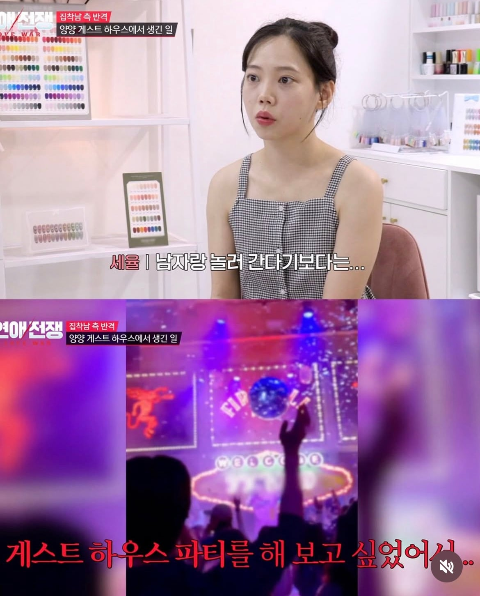
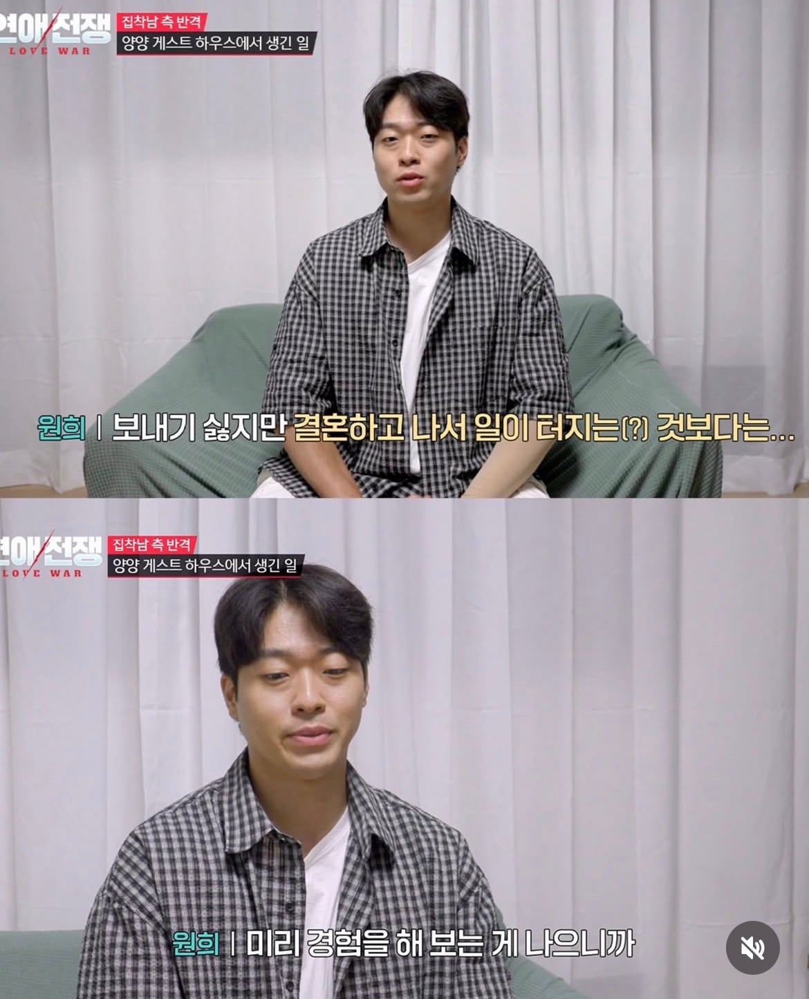
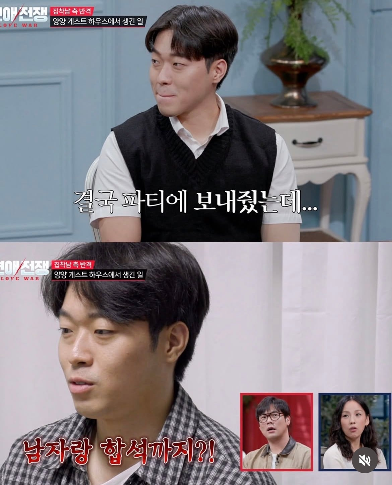
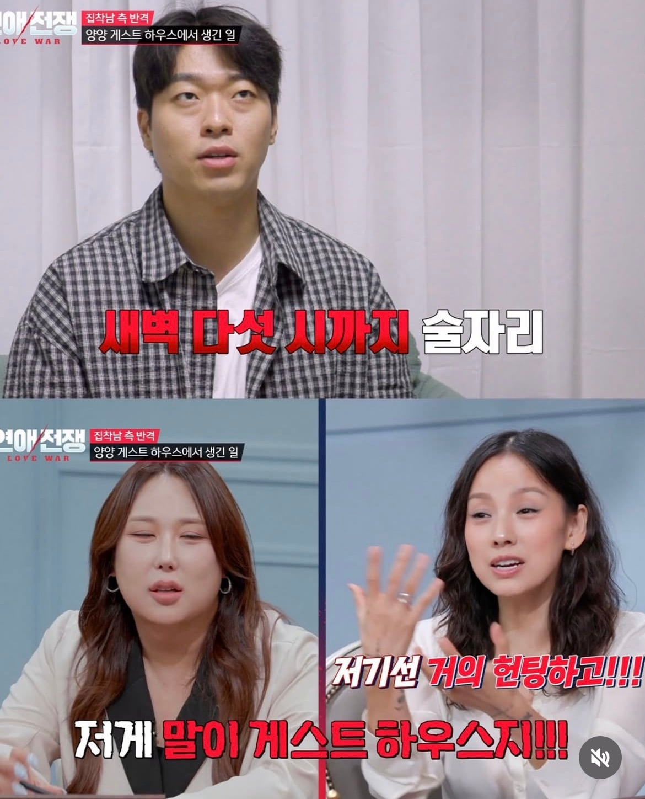
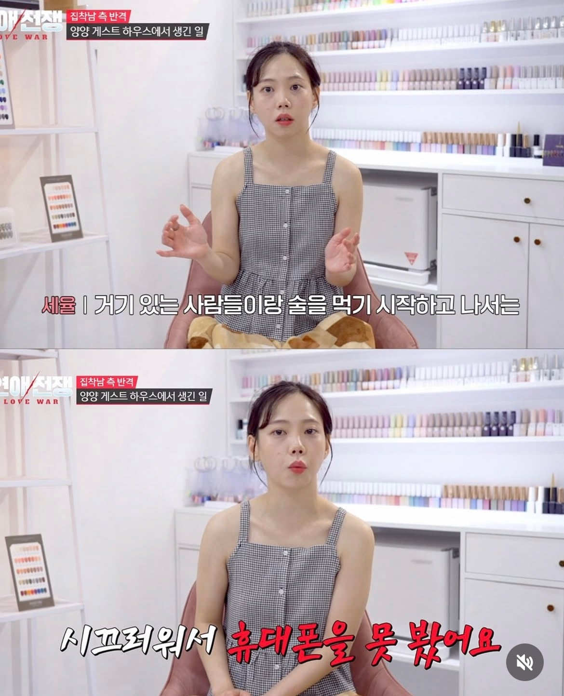
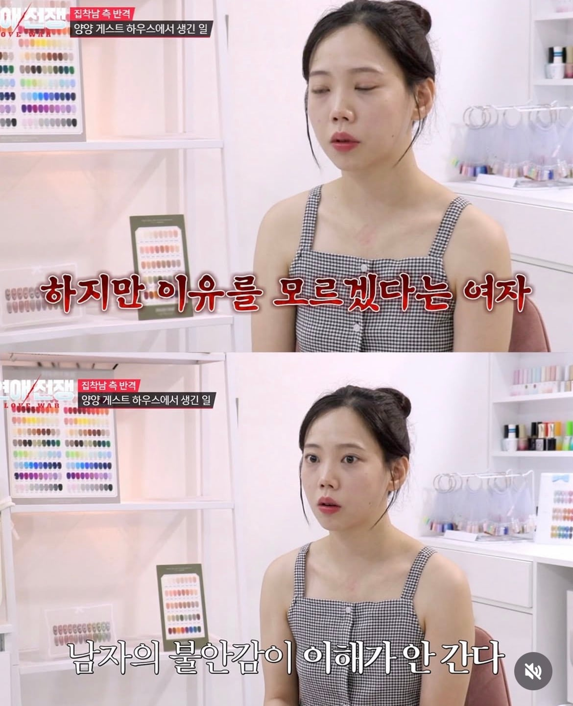
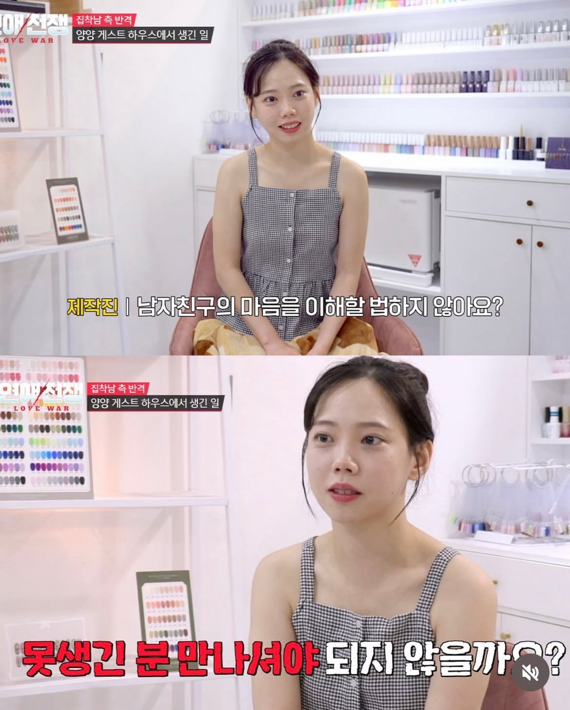
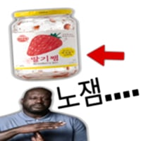

대본 잘쓰네








대본 잘쓰네
네


ㅋㅋㅋㅋㅋㅋㅋㅋㅋㅋㅋㅋㅋㅋㅋㅋㅋㅋㅋㅋㅋㅋㅋㅋㅋㅋㅋㅋㅋㅋㅋㅋㅋㅋㅋㅋㅋㅋㅋㅋㅋㅋㅋㅋㅋㅋㅋㅋㅋㅋㅋㅋㅋㅋㅋㅋㅋㅋㅋㅋㅋㅋㅋㅋㅋㅋㅋㅋㅋㅋㅋㅋㅋㅋㅋㅋㅋㅋㅋㅋㅋㅋㅋㅋㅋㅋㅋㅋㅋㅋㅋㅋㅋㅋㅋㅋㅋㅋㅋㅋㅋㅋㅋㅋㅋㅋㅋㅋㅋㅋㅋㅋㅋㅋㅋㅋㅋㅋㅋㅋ
아 네일아트 하시는 분 이구나~~
눈을 동그랗게 뜨고 직시하면서 말하는 사람 약간 위화감 드는데
비슷한 위화감 느낀게 테라노스 엘리자베스 홈즈였음 홈즈는 심지어 눈동자 속도 비어있음
그.. 그러고 계신거 같은... 어흠...
달콤레나의 대사를 인용하겠어요
ㅈㅃㅇㄹ?
레나 말 써주고싶네 ㅋㅋ
그 직업 ㅋㅋ
콧대가 입술보다 낮은거 같은데
연출

걱정할 외모는 아닌듯
어허!!ㅋㅋㅋㅋㅋ
ㅋㅋㅋㅋㅋㅋㅋㅋㅋ 왠지 백종원이 떠오르는군
대본 야무지네
출연료 얼마나 받길래
다 돈받고 대본 읽는거다
알고란게 더 괘씸
"ㅋ"
대본 좆같이 썼네
직업에 선입견을 졸라게 주입해주신다!
아~ 플필헤네카??
모두 메모장 켜!!